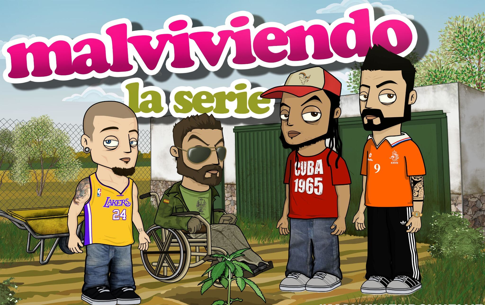

|  |
Malviviendo |
Se desarrolla en un barrio marginal de Sevilla. La trama sigue a un grupo de jóvenes con diversos problemas y aspiraciones que intentan sobrevivir en un entorno complicado. A través de un enfoque humorístico y situaciones cómicas, la serie aborda temas como la amistad, la delincuencia, el desempleo y la búsqueda de sentido en la vida. |
Plataforma:Youtube Lanzamiento:27/01/2009 Director:David Sainz |
Comaland |
Los creadores de Malviviendo y La Niña Repelente traen esta nueva webserie de animación. Dos jóvenes, al intentar suicidarse, caen en coma y llegan al mundo de los sueños de Comaland. Ahí, convertidos en Putoamo y Mataorcos, vivirán grandes y curiosas aventuras. |
Plataforma:Youtube Lanzamiento:15/09/2014 Director:David Sainz |
Criminalística |
Criminalística es un CSI latino en el que, después de triunfar, Julio Mambo es contratado para interpretar al agente Padrón. La isla de la Palma se convierte en “Ciudadela Federal, la capital del mal”, el peligroso lugar que el agente Padrón y su inseparable ayudante, el agente Moreno, deben limpiar de la imperante delincuencia.Cualquier parecido con “Narcos” es solamente pura coincidencia. |
Plataforma:Youtube Lanzamiento:27/11/2018 Director:David Sainz |
Flaman |
Ezequiel es un chaval de barrio como cualquier otro, que vive con su madre soltera. Sin embargo, tras cumplir veinte años, se da cuenta de que está desarrollando superpoderes. Alfredo, un compañero friki de clase, lo intenta convencer para que se convierta en un superhéroe clásico. Ezequiel, que nunca ha tenido demasiadas luces, deberá entender a la fuerza que un gran poder conlleva una gran responsabilidad. |
Plataforma:Youtube Lanzamiento:09/04/2013 Director:David Sainz |